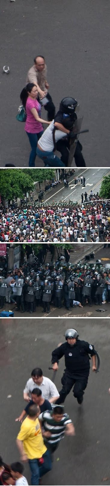
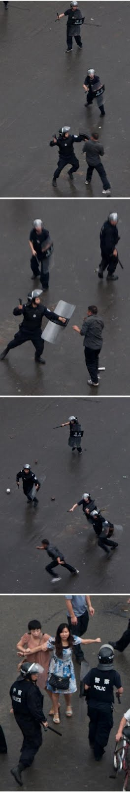
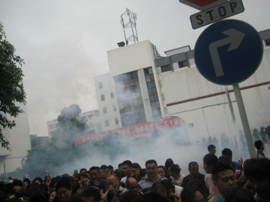
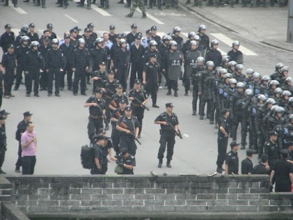

伟光正的七一生日刚过，四川什邡就发生了极不和谐的事情，这让我党情何以堪？
本周转载一些关于四川什邡的网文、照片和视频，以飨读者。
（编程随想注：这篇网易的专题报道比较详细，内容也挺长，慢慢看哦）
（编程随想注：“一五一十部落”整个网站在2014年3月被真理部查封了，这篇文章的原始链接已经【失效】）




（以下视频需翻墙才能观看）
什邡警方用催泪弹驱散人群 @ YouTube
什邡警察清场实拍，比电影特效还要震撼 @ YouTube
四川什邡市民上街抗议钼铜污染遭军警血腥镇压 @ YouTube
俺博客上，和本文相关的帖子（需翻墙）：
《谈谈环保问题的根源和解决之道》
《“片面强调 PX 低毒”属于【偷换概念】——广东茂名 PX 抗议活动随想》
《每周转载：关于毒大米和土壤污染》
《每周转载：关于宁波镇海的环保抗议（评论若干，照片多张）》
《会叫的孩子有奶吃——启东人民在行动，上海人民怎么办？》
《回顾2011年重大群体事件（多图）》
本周转载一些关于四川什邡的网文、照片和视频，以飨读者。
★《什邡百亿钼铜项目夭折真相调查 @ 网易》
（编程随想注：这篇网易的专题报道比较详细，内容也挺长，慢慢看哦）
四川什邡，一个计划投资超百亿的钼铜项目由于当地人的激烈反对终于搁浅了。催泪弹、震爆弹、警棍、鲜血，网络上迅速传播开来的这些令人惊悚的词汇和图片，提示着当地政府和群众之间冲突的尖锐程度。什邡市政府官员也承认当初和群众之间的沟通不足，他们只是没有想到，自己习惯性忽略民意的后果竟然这样严重，他们在维稳思路下的急躁处置似乎也是这种惯性所致。如今，项目虽然已经叫停，但其背后公众参与环保的无力和官民割裂之深却仍在困扰着我们。与此同时，企业，这个事件的重要环节，都在事件中被“忽略”了——无论是它的项目，还是它的利益和未来。
什邡：百亿钼铜项目夭折真相
要不是因为6天前一场隆重的奠基仪式，许多什邡人也许仍旧会被“蒙在鼓里”。
6月29日，什邡市西去16公里的灵杰镇上，一块巨大的空地上，一场盛大的奠基典礼在这里举行。四川什邡宏达集团正式宣布将在这里投资104亿元建设钼铜项目生产基地，而作为“5·12”特大地震重灾区的什邡市，亦将通过该项目而获得超40亿元的年利税收入。
因担心项目污染，当地居民随即发起的一场集体反对行动，官民冲突的激烈以及政府布置警力用催泪弹和震爆弹驱赶人群导致有群众受伤的消息和图片一时间引发网络舆论热潮。7月3日什邡市宣传部召开新闻发布会称：“停止该建设，今后不再建设这个项目。”
据什邡市人民政府新闻办公室官方消息，7月5日晚，什邡召开全市干部大会，会议宣布，经中共四川省委同意，中共德阳市委决定：中共德阳市委常委、副市长左正同志兼任中共什邡市委第一书记；中共什邡市委书记李成金同志协助左正同志工作。
虽然事件暂时得到平息，但其过程的一波三折折射出这个所谓的四川省“十二五”重点项目自始至终的信息不透明以及地方政府招商的热切和环保监管职能的缺失。
冲突发生
“在冲突过程中确实存在一些过激的行为，不仅游行示威者受伤，一些围观群众也受伤。”
7月3日下午3时许，《中国经营报》记者来到什邡市委门前，只见市委大院里，许多荷枪实弹身穿迷彩服、防爆衣的武装人员把守在市委大院各个入口。此外，市委大院的两侧则有诸多左手持盾牌、右手持警棍的特警、武警，每隔十米左右就会围起一堵人墙，与游行的人群对峙着。根据停靠在其旁边数十辆诸防爆警车川A、川B、川C牌照判断，他们分别来自成都、绵阳、德阳。
通过采访当地群众和什邡市政府部门，记者了解到整个事件的大致过程是：6月30日上午就有部分市民来到市政府门口要求停止建设钼铜项目；7月1日晚，又有近千名市民和学生聚集在什邡市委门口和宏达广场两地上访，要求停建项目；到7月2日中午，聚积市民越来越多，情绪激动，警民之间发生了冲突，多名群众受伤。
“一开始游行的时候警察都是本地的，数量也比较少，随着时间的推移，外地警察来的越来越多，对立的情绪逐渐严重起来，冲突才爆发的。”7月3日下午，一位参加游行的市民告诉记者。
7月3日，什邡市第二人民医院的16楼、17楼以及19楼均有被打伤的市民在治疗，大部分均表示没有参与游行，他们是围观，或是途经办事而被打伤的。参加完中考不久的小曹（16岁）告诉记者，当时他正兴高采烈的拿着毕业证，路过市政府时突然被人从背后踹倒，接着就看见一群拿着电棍的警察冲过来，“他们冲过来不问青红皂白就对我一顿暴打，我根本不知道什么情况。”
“在冲突过程中确实存在一些过激的行为，不仅上访者受伤，一些围观群众也有受伤的。”什邡市宣传部副部长陈林对记者说。
项目来的太“突然”
“那天（6月29日）上午挺热闹的，鞭炮齐鸣，这里来了很多车，很多官员，后来回家看电视才知道这里要建一个钼铜项目。”
此次引发当地居民“群体性”事件的，是“宏达钼铜多金属资源深加工综合利用项目”。其不仅是汶川地震灾后恢复重建重点项目，亦是四川省特色优势产业重大项目和四川省“十二五发展规划”重点项目。据悉，该项目占地3350亩，建成后年产钼4万吨、阴极铜40万吨、硫酸180万吨，每年伴生回收黄金10吨、白银500吨；年销售收入预计达500亿元。
根据宏达股份（600331.SH）的公告，该项目自2010年10月份就已经开始运作。且在2010年11月18日至2011年7月6日，宏达钼铜先后收到四川省安全技术监督管理局、四川省发展和改革委员会、四川省水利厅、四川省卫生厅出具的包括安全生产、水土保护、职业病防治在内的多项批复文件。
但是颇为吊诡的是，在过去2年多的时间里，众多什邡当地民众对一个如此重大的项目几乎一无所知。
“6月29日早上，我开车从金桥大酒店（宏达集团在当地修建的宾馆）的门前走过，看到那里拉着钼铜项目的大横幅，后来收音机里也广播了这个，我才知道政府要做这个钼铜项目。”出租车司机金师傅告诉记者，“第二天（6月30日）就有市民开始到市委门口上访，后来又去了很多学生，拉着横幅要求停建宏达钼铜项目，最多的时候大概有几千人。”
与该项目仅有近百米之隔的什邡市渔江新村的村民直到奠基当天才知道其存在。“那天（6月29日）上午挺热闹的，鞭炮齐鸣，这里来了很多车，很多官员，后来回家看电视才知道这里要建一个钼铜项目。”渔江新村的一位村民告诉记者。
渔江新村距什邡市区14公里，南靠什邡北京产业园区，西贴北京大道，东靠石亭江与绵竹市隔江相望。而在江边则是高达三四米，绵延数公里“黑沙”——磷矿渣，据金师傅说，这些矿渣也是宏达开采和加工磷矿所产生的。
据知情人士透露，除了当地居民反对之外，一些在当地投资建厂的企业，比如蓝剑集团以及长城雪茄卷烟厂对此也很有意见，甚至政府内部对此也有不同的声音。
“就算没有危险，但是传出去对于这两家企业自身的品牌和形象也会造成一定的影响，现在食品安全问题又非常突出，稍有风吹草动都会出现问题。”上述知情人士告诉记者，“如果这个项目开工，蓝剑集团和长城雪茄卷烟厂很有可能会搬走。”
“政府此前在引进这个项目的时候确实没有及时地宣传和沟通，这也是我们工作的失职之处。”什邡宣传部副部长陈林告诉记者。
当地居民在自发印刷的传单中也称：钼铜项目将对当地水质造成严重危害，因此坚决反对这个项目。“我们不反对项目，我们反对的是污染。”一位参加游行的市民对记者说，“钼铜项目一旦建成，什邡的地下水会受到污染，到时候不光我们没法活了，就连周边的广汉（市）和绵竹（市）也会受到影响。”
环评的疑惑
金属冶炼，一般都是高污染的事情，这种项目的规划需要认真地识别环境风险。
不过，当地官方对控制宏达钼铜项目的污染问题则显得“胸有成竹”，什邡市政府一位官员语气肯定地向本报记者表示：“对宏达钼铜项目的环境评测执行的是有史以来最严格的标准，地方政府在其中没有出现任何利益输送。”
一位要求匿名的什邡市环保局负责人则表示，宏达钼铜项目潜在的环境污染主要来自两个方面，第一是废水污染，但宏达可以通过废水循环，做到不让废水外排。第二是废气排放，该人士称投产后确实将会有废气排入大气中，但他强调：“废气排放是达标的，不会影响周围大气环境质量或引起排放污染物超标。”
2011年3月，德阳市环保局用了一周的时间通过了项目环评的数据监测，资料显示：“该项目的监测项目是我市环境监测站建站以来最多的，几乎涵盖了以前做过的所有监测项目，涉及空气、水质、底泥、土壤和植物样品共58个点位；共动用市级和六县市区监测设备和仪器50余套，人员近50人。”
“即使在建成后，宏达钼铜项目也将成为什邡市环保局的重点污染源被监督，并由专人驻厂进行环境质量监测。”上述人士表示。
不过据记者了解，未来什邡市在居民生活用水的取水方式上将发生变化，由目前单一依赖地下水为主，逐渐向依靠人工渠引导都江堰灌区水为主，但对此变化，当地政府人士表示：“此事和宏达钼铜项目没有任何关系。”
“钼虽然没有毒性，但是其产生的亚铁氧化钾却是有毒的，而且这种项目需要使用巨量的水。”一位不愿透露姓名的化工业内人士告诉记者。“废石、废水析出的放射性气体氡及其子体进入大气，并向四周弥散，污染空气，氡及其子体与空气中的浮游粒子结合，构成放射性气溶胶，飘浮在空气中，使伴生矿井和堆场空气中存在较高浓度的氡及其子体。氡及其子体随呼吸进入人体后，通过内照射给人类造成损害，甚至致癌。”
从环评的审批流程观察，宏达钼铜项目的环境评测工作手续齐全，但是其公布的信息却非常不足。
国家环保部官方网站在今年2月28日对项目进行了审批前的公示，并于3月26日正式作出批复，其在2月28日的公示中显示：“项目主要建设内容包括4万吨/年钼冶炼系统、40万吨/年阴极铜冶炼系统和自备电厂三个部分，工程实际总投资67.24亿元，其中环保投资9.6547亿元。”除此之外，没有任何相关环评信息。
而记者获得的一份《四川宏达钼铜有限公司钼铜多金属资源深加工综合利用项目环境影响评价公众参与第二次信息公示》（环境影响报告书简本）显示，该项目对于地下水、地表水、大气环境、声环境、固废环境、生态环境均有影响，不过同时强调上述影响是可控的。据环评报告书显示，为此项目做环境影响评价的机构是北京矿冶研究总院，联系人为周连碧、陈谦。截至发稿前，记者未能联系上周连碧，陈谦则以目前处于比较敏感的时期，要等待上层决策为由婉拒了记者的采访请求。
根据上述公示文本，其发布日期为2011年5月9日。该项目第二次信息公示的时间为2011年5月9日-5月20日，在此期间，公众可以通过电子邮件、电话告知或到四川宏达钼铜有限公司办公室查阅的方式获取工程环评报告简本，同时建设单位将根据公众的意见对公示的内容中涉及的内容进行补充说明。
而公示文档写明，“本次公众参与的范围主要为四川宏达钼铜有限公司钼铜多金属资源深加工综合利用项目所在地的和与本项目有直接或间接关系的企事业单位和个人。”征求公众意见的具体形式为：“通过在拟建工程所在地网上公示的方式对项目基本情况、可能产生的环境影响、拟采取的环保措施及环评报告初步结论向公众进行介绍。”
另据该文件称，“对本拟建项目有意见或提出建议，可在二次项目公示之日起10个工作日内以电话、书面、电子邮件等方式向四川宏达钼铜有限公司或北京矿冶研究总院环境影响评价中心反映。”
什邡市环保局一位张姓科长表示，相关的信息公示过两次，还在当地《什邡报》上刊登过，但第一次的公示页面已经找不到，记者登录其提供的位于什邡市政府政务服务中心的第二次公示信息页面，显示记者是“本站第一位访问者”。很明显，当地的群众对这些公示的内容全然不知。
《中国水危机》作者、公众与环境研究中心主任马军告诉记者，“环境影响评价书像这种环境监测报告一般都是具有资质的第三方机构去做的，公示的时间短，公众参与权和知情权很难得到保障和满足。而且即使公众的意见出来了，是否被采纳也很难说。像这种第三方监测机构，一方面是政府和企业的压力，另一方面是利益上的诱惑，很难坚持科学公正的检测报告。”
据马军说，有关宏达钼铜项目环境影响报告书全本有800多页，但是相关法律没有规定企业或者政府部门一定要公开，而只是要求一个简本（9个页码），公布得非常不足，因此无法判断该项目污染的真实状况。“有些报告书即使表面说得很好，但是实际执行起来未必会像宣称的那样。”
上述当地环保系统官员则告诉记者：“全本的环境监测报告也没有必要全部公示，这是归国家环保部门主管的，法律上也没有明说一定要公示全本。”
马军认为，该事件暴露出三个问题，一是环境评估缺少全本，二是至少举行一次听证会，三是健全司法渠道，在群众的知情权和参与权不能有效保证的情况下，应该有权要求项目重新来过。
“金属冶炼，一般都是高污染的事情，这种项目的规划需要认真地识别环境风险。”马军对记者说，“其实该事件对于中国的民主决策环保项目实施也是一个契机，中国环评大门已经失守了30年，应该借助这个事件，使得中国的环境评估保护机制进行调整，未来更多地在法律层面上进行健全。”
为什么是什邡？
仅仅从利税收入观察，40亿元对于什邡自然是一笔非常大的收入。
什邡市政府一位官员对本报记者表示，此前成都市、上海市都在争取这个项目，但由于宏达股份和什邡市的历史有渊源，宏达股份抱着回报什邡市的目的，将钼铜项目放在了什邡经济开发区内，“对于地方经济而言，这是一块巨大的蛋糕。”
什邡市位于德阳市西南部，由于其丰富的矿产资源，这里的化工产业一直长期占据着地方经济的重要地位。以宏达钼铜项目为例，它是“5·12”特大地震重灾区什邡的首个百亿级投资项目，该项目建成投产后，年销售收入将超过500亿元，利税超过40亿元，项目固定用工能解决当地约3000人就业，带动相关产业发展超过400亿元。
仅仅从利税收入观察，40亿元对于什邡自然是一笔非常大的收入，因为作为国务院确定的“5·12”十大极重灾县之一，2011年什邡市地区生产总值为167.4亿元，而年财政总收入仅为61.9亿元。
而在巨大的经济利益背后，当地居民对于化工企业给当地水质带来种种影响传言甚多，其中流传最广的一个传言是，当地因为化工企业的违规排放，而出现了一个癌症村，尽管此后官方进行了辟谣，但当地居民依然对化工项目持抵触态度。事实上，对于钼铜项目将污染地下水等传言早已有之，随着宏达集团钼铜项目的奠基，当地居民的质疑终于达到顶点。
7月3日陈林在接受本报记者采访时亦承认，在宏大钼铜项目的所有证件未全部办妥之前，地方政府并未进行宣传，对于当时已经流传的种种言论，并未及时进行回应。
对于化工企业给当地环境带来的影响，地方政府并非没有意识到。从2003年开始，什邡市政府先后投入逾亿元资金对重污染企业进行整治，2003年，就有13个污染源获得治理。
而在2008年汶川地震后，借助各方财政援助，什邡市亦希望借机改变此前一直以化工业为主的经济结构，“目前铅酸蓄电池项目、印染皮革项目、黄磷生产项目已经不再被什邡市政府允许兴建，而尽管宏达集团依然是地方财政的纳税大户，不过化工业在什邡GDP贡献的比重正在降低，取而代之的是机械制造业。”
事情的急转直下连当地官员都有点措手不及。7月3日什邡市委一位人士表示：“是否继续该项目，已经不是什邡市一级政府能够决定得了的，最终的决定权应该在省上。”话音未落，当日下午，仅仅亮相5天的宏大钼铜项目，就被宣布彻底告别什邡。
★《张天城：什邡——苦难与光明的缩影 @ 看中国》
来到美国之后，我用过两次中国产汽车轮胎，一个在一个月内变形，一个在半年内爆胎。我坚持喝了几年中国茶，但只要一次不洗茶，喝下去，就觉得口干舌燥。后来，我决定不用中国轮胎，不喝中国茶。
两年前回中国，从郑州到焦作，连绵八十公里，都是烟霾、难以呼吸。焦作市区所有的天然河流都是有颜色的，红的、黄的、白的，紫的，黑的……就是没有绿的。那个碧云天、黄花地、北雁南飞的故乡，已经成为遥远的追忆。
对这样的政府和政党，能说什么呢？他们把中国的一切都搞的不再适合人类。环境不再适合人类居住、道路不再适合人类通行，学校不再适合人类就读，食物不再适合人类食用……
查查什邡的市长、市委书记的老婆、孩子还在中国吗？
什邡人民不过是要阻止上马一个污染项目，和平请愿，他们没有要求推翻中国共产党，没有反对“四项基本原则”，没有反对“三个代表”、“五个不搞”。政府就开始打人、杀人。打少女、打老人，追上去，包围、分割，把人劈头盖脸的打倒，然后践踏在地，继续用警棍抡、砸，直至把人打至重伤、把人打死。向人群发射陶瓷外壳的震爆弹，陶瓷弹片在震耳欲聋的巨响中刺入人们的血肉。然后继续开动宣传机器说“暴民袭警、和平清场”。
一位女青年这样描述抗议现场：“一个大爷在路上，腿上全是血！我这辈子从没看过这么多血！我好害怕！……我一转身就看见那个柔弱的女孩还没有回过神来，就被一个高大的防暴警察一脚踹倒在地！然后几十个警察围过去一阵警棍打在女孩身上……我们想冲过去救她！一群警察拿着警棍向我们冲来……这都是老人妇孺、都是手无缚鸡之力的百姓啊！……我们被打了！有好几个女孩子被警棍打倒在地！我们手无寸铁！我们只能闪躲！我看见警棍在老人女孩身上狠打！我的心在滴血！我的手还在发抖！”
一张现场图片的文字说明这样写道：“一名躺在地上14岁小女孩已经死了！她的父亲含恨不过，驾车冲击市府，又被打成重伤！她母亲白衣跪倒在警察的盾牌前，地震没震死，却死在警察叔叔的警棍下。”
我在想，这个政府、这个政党还有希望吗？“假、恶、暴”已经深入他们的骨髓。成为他们的第一反应，第六感官，思维方式，行为方式，掌控了他们的一切。难道和平、理性、仁爱、真诚这些品质在他们的心里、思想里、意识里、灵魂里没有哪怕一点空间、没有一丁点存在吗？透过什邡暴力镇压事件，又一次验证中共本性。面对民众和平抗议，可以有一千种处理方式——可以宣布暂停项目，做调研，做听证，与市民公开对话，进行公民投票……但他们只能无可救药的选择暴力、谎言。这说明什么？说明这个政府，这个政党只相信、只知道、只信奉、只遵从“暴力和谎言”的原则。他们对“暴力”的迷信已经到了丧心病狂的地步。
作为“暴力”和“谎言”的受害者，我们能怎么办呢？我们只有选择勇气和真相。勇气和真相不是天上掉下来的。勇气和追求真相、明白真相的智慧都来自于对属世利害的超越。对于那些不怕死的、壮烈自焚的藏传佛教徒，中共只能把冲锋枪换成灭火器。对于那些明白真相的，追求真相的，在网路上传播真相的民众，中共的谎言只能成为他们自己的锁链。
网民上传的照片，有一个年轻的女性，面对警棍和手枪，她没有退缩，而是张开双臂，阻挡面前的特警。时代不同，但民众的勇气和良知却是相同的，她让我想起了“六四”阻挡坦克铁流的王维林先生。
照片上，我也看到一个展露娇美笑容的女中学生，我女儿这样的年龄，她与同学们一起打着横幅。不知道，她们有没有被打倒、被践踏、被伤害，中共摧残了多少美好娇艳的青春。这一次什邡民众抗暴行动，是学生发起的，有大量学生参与，什邡的年轻人打出了“我们可以牺牲，我们是90后”的横幅，铿锵坚定、高贵尊严，自由的生命之花傲然盛开。当维权和民主意识已经深入到这些十几岁，二十出头的年轻人心中时，中共的末日还远吗？
什邡抗暴事件显示，中共的大大小小的执政者们，他们的心智和品质已经不适合做为人类，更遑论做为执政者、施政者。仅仅是反对一个污染项目的和平请愿，都能换来党妈妈的棍棒、炸弹伺候、换来收监下狱、换来灭顶之灾，换来一个十四岁鲜艳娇嫩生命的凋零……
当地政府的颟顸、愚蠢、无知、无耻、无法、无天、无能都已经登峰造极。网民说中共真的有把“小事化大，大事化炸”的本事，这就是政法委的维稳能力。刀剑不总是有用的，良知和勇气也不总是在沉睡着，而是在不停的积蓄、积聚，总有一天要爆发、爆炸。任何迷信暴力和谎言的都决不会长久。因为暴力和谎言与生俱来就是毁灭的力量，黑暗的力量，罪恶的力量。指望毁灭的力量来建设繁荣，指望黑暗的力量来创造光明，指望罪恶的力量来建造和平，都无异于缘木求鱼，痴心妄想。共产党的毁灭、黑暗、罪恶的本质决定他们只能是人类世界的祸害。他们祸害了中国、又在祸害全世界。
日前，欧洲议会召开以“法办共产主义”为议题的会议，探讨如何将共产主义的罪行诉诸司法。人类被共产主义祸害一百年，无数森林变为荒漠，无数文明化为尘土、无数人头落地、无数灵魂荒凉，无数人至今生活在恐惧和奴役中，共产主义做为人类历史上最大的犯罪集团，最大的邪教集团，理应受到人类社会的审判。
什邡是一个缩影，一个人类社会饱受共产主义奴役的苦难缩影。什邡也是一个象征，一个民众觉醒，反抗共产主义暴政的光明象征。
★《关不羽：山河破碎，社会分裂——什邡事件的启示 @ 一五一十部落》
（编程随想注：“一五一十部落”整个网站在2014年3月被真理部查封了，这篇文章的原始链接已经【失效】）
从三峡工程决策是的专家斗嘴，到厦门、大连两地PX事件的市民“散步”，再到什邡的官民暴力冲突，历经十余年。中国民众面对项目工程的环境风险，从围观“神仙斗法”，到隐忍的行动表达，终于到了正面对抗的地步。这条逐步升级的路径，标志了中国民众对环境污染问题的焦虑、愤怒已经到了一个临界点。
一、污染严重，山河破碎
中国的环境污染问题，已经到了生死存亡的地步了。据国家环保总局公布的资料，我国的河流、河段已有近四分之一因污染不能满足灌溉用水的应用要求（这是我国最低一类的水质要求），全国湖泊约有75％的水域受到显著污染，有些水域已经丧失水体功能。这是多么触目惊心啊！而类似情况，几乎在所有环境领域都在发生。可谓山河破碎、满目疮痍！
而到处爆发的污染事件中，处处可见项目、工程的身影。小地方上小项目，大地方上大项目，举国范围则上所谓世纪工程。鑫龙公司的焦化厂、玻璃厂可以制造出邵阳癌症村；中海油的蓬莱19-3油田污染了渤海湾；三峡工程正在破坏整个长江中下游水系。谁也不能否认这个事实——政府主导的项目工程已经成了环境风险的重要来源。在这样背景下，设身处地的思考，面对铜钼项目的什邡民众，怎能泰然处之呢？
即使什邡当局的颟顸无能、专横跋扈已经跌落到中国官员并不令人期待的平均水准之下，也不可能意识不到本地民众的焦虑情绪、反抗意识。实际上，在最终对抗之前，事件已经酝酿了很久，争议与诉求由来已久，民众的怨愤绝非在最后一刻才爆发。那么，为什么什邡当局宁可冒着激起民变的风险强行上马铜钼工程呢？其中深层次的愿意是，官民双方的根本利益诉求分道扬镳，中国面临着社会分裂的巨大危机。
二、利益断裂，社会分裂
中国奉行的是自上而下的行政系统，虽然号称地方官，任免、考察却非地方可以做主。乌纱帽是上级给的，自然向上级负责。无论口号喊得多动听、多美丽，都无法掩盖这种根深蒂固的权利结构失衡。要说什邡当局的大小官员代表了什邡民众的利益，只怕他们自己也不信。今天这位是什邡市长、什邡市委书记，明天可能就是九方市长、九方市委书记了。你要他代表地方利益，为地方做长期的考虑，那是太难为他了。
我们看看中国官员的履历，今天这里、明天那里，三年一迁、五年一调。若是久游宦海，恐怕自己也闹不清了，谈何代表某某地方的利益呢？比照一下万恶的西方，大部分美国政客的履历单调乏味。起步阶段的某某市议员混成市长，先得老老实实给父老乡亲作揖陪笑；混到州议员、州长，还得靠家乡父老给面子、扔选票；官场上十年媳妇熬成婆，总算联邦议员了——不好意思，还得加个“某某州”的前缀。虽然中国的聪明人告诉我们，万恶的西方选举是虚假的、选票是买来的。可是，试想一下，如果什邡事件发生在西方，搞到这样天怒人怨，下次选举是肯定没戏的——不仅什邡没戏，跑到九方继续“好官我自为之”也没戏。而在制度优越性极强的本国，调任九方是没什么问题的，就算继续主政什邡也不奇怪。最坏的结果也不过是避避风头、轻装上阵的复出秀。
可见，选票确实是地方基层民众利益和地方官员之间的利益纽带。也许诚如那些聪明人所言。人家的选票是买来的，是忽悠民众上位的。而我们这里，连忽悠也懒得忽悠你，更不用说买了。实在闹僵了，还可以用特警收场，何其快哉！
三、长期利益，谁的利益？
当然，自上而下的权利系统对地方官员也会有些约束，鼓励作恶、鼓励漠视民生肯定不是体制的初衷。但是这种制度边界太脆弱，形式大于实质，潜规则压倒明规则。上面固然管着下面，可是上面还有上面，也许上面的上面和下面牵扯甚多，或者上面的上面的上面的侧面也有些关碍，说不准上面的上面的家里面也扯在这堆乱麻里。如此官场江湖，怎能不浆糊？据网友微博爆料，什邡铜钼项目的宏达公司高层有现任、前任副部2人，厅级副厅级各1名，处级至少7人的官员。如果上述信息属实，即便不考虑铜钼项目带来的政绩资本、黑灰白好处，项目登场的霸王硬上弓也是不难理解的。
总有些真单纯或装单纯的人对中国政治体制的科层结构一统到底的形式美爱不释手、赞不绝口。殊不知这样一个内部封闭、自上而下的体系内，表面上像模像样、条理清晰的监督、考察、法规、纪律，早就被许多“面”扭曲得不成样子。
官员和民众虽然同处一个地域空间，却是生活在不同的世界中。利益取向不同，游戏规则不同，便是样样不同了。比如什邡事件中，你说官员短视，不顾地方长期利益，恰恰是你不明就里。“地方长期利益”本来就是民众单方面的诉求。对什邡官员而言，只有官场长期利益、个人长期利益罢了——他们并不短视，只是深邃的目光并不投向什么“地方长期利益”。
四、你不关心，我关心
中国社会是经过长期民粹主义熏陶、阶级斗争调教，社会基层缺乏自组织的公民团体，属于那种两只牧羊狗看住一百头羊的分散结构。民间共识凝聚困难，组织化更是无从谈起，仿佛这是易于官方掌控的好状态。但是，面对一波又一波激化的群体事件，官家还能那么自信吗？
民间再怎么分散，共同的利益底线还是有的。统观中国频繁发生的群体事件，强征土地、司法黑幕、环境恶化是最常见的诱因。因为，这些是民众生存的底线，超越了民间各阶层的分歧，形成冲击力巨大的群体冲击力。一瞬间羊群变狮群，威风八面的地方官员也难以应付。
而环保问题具有特别的典型性——一方水土养的一方人，贤愚不肖、贫富中产，都是无差别的受害者。毒害物质可分不出你是富人还是穷人，外来务工人员还是本地土著。因此，被官家忽视的环保问题，恰恰成了“你不关心我关心”的民间焦点。
平日里分散软弱的大多数，任由权势者拿捏侮戏，养成了骄横跋扈、为所欲为的官风。轻视民众的力量、漠视民众的利益诉求，堵塞了沟通渠道，积累怨愤。而一旦触碰底线，引发民意沸腾、民众蜂起，官家束手无措，只好诉诸滥用暴力。当社会矛盾激化时，“一盘散沙”、“缺乏公民社会团体”就成了有序解决利益分歧的软肋。事到临头，官府要和民间沟通、协商、博弈、妥协，也找不到合适的对象。
假设什邡钼铜项目在一个公民社会建设良好的地区。事前立项时，官家、商家可以向民间环保组织解释项目的技术问题，争取民信；与地方民众代表展开利益博弈，输出利益。而民众组织的直接参与，也是对项目环保资金到位、技术成熟的最好监督。这样征信于民、让利于民的沟通，事半功倍。比起苍白的口号式的“有利于地方税收、提升就业率”不知要好多少。即使立项失败，也是好说好散，缓和矛盾冲突，走不到大规模冲突的地步。可惜的是，什邡不具备这样的条件。
事前漠视环保问题的底线诉求，以为官威所在、无所不能。事发后，可以想象一堆平日威风八面的官员，看到乌央央的人群压在门口的恐慌与无措。连明确的交涉对象也没有，拿着高音喇叭喊话的“沟通解释”是多么低效啊！老电影里经典场景，胖翻译在打谷场上高喊：“老乡们，不要怕，皇军不抢粮食……”，大概是无效的。
什邡事件就这么来了，据说现在还在“后续处理”，或者说“秋后算账”。在威武之师、雄壮之师的特警部队英姿飒爽护驾下，官员们又可以威风凛凛地挥舞印把子了。某某拘留、某某开除、某某劳教，一雪前耻。但是，如此威风得意，不知道能持续多久，进入下一个恶性循环。
★顺便转贴几张照片
★再顺便分享几个视频
（以下视频需翻墙才能观看）
什邡警方用催泪弹驱散人群 @ YouTube
什邡警察清场实拍，比电影特效还要震撼 @ YouTube
四川什邡市民上街抗议钼铜污染遭军警血腥镇压 @ YouTube
俺博客上，和本文相关的帖子（需翻墙）：
《谈谈环保问题的根源和解决之道》
《“片面强调 PX 低毒”属于【偷换概念】——广东茂名 PX 抗议活动随想》
《每周转载：关于毒大米和土壤污染》
《每周转载：关于宁波镇海的环保抗议（评论若干，照片多张）》
《会叫的孩子有奶吃——启东人民在行动，上海人民怎么办？》
《回顾2011年重大群体事件（多图）》
版权声明
本博客所有的原创文章，作者皆保留版权。转载必须包含本声明，保持本文完整，并以超链接形式注明作者编程随想和本文原始地址：
https://program-think.blogspot.com/2012/07/weekly-share-11.html
本博客所有的原创文章，作者皆保留版权。转载必须包含本声明，保持本文完整，并以超链接形式注明作者编程随想和本文原始地址：
https://program-think.blogspot.com/2012/07/weekly-share-11.html